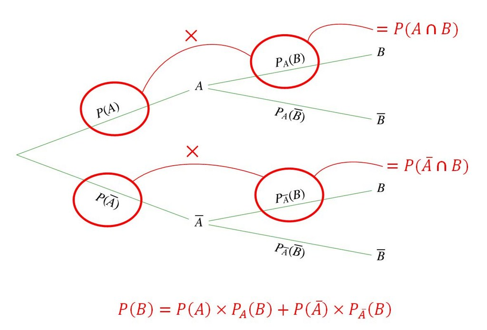

Équation : une égalité avec un ou plusieurs inconnus
Équation du second degré : une équatioln de la forme:
ax2+bx+c=0
x2+16x = -25
x2+50x+25 = 0
(x+5)2 = 0
x = -5
S = ∅
8x2-16x = 0
8x2 = 0
x2+2(5x) + 52 = 0
x = √2 ou x = -√2
S = {√2 ; -√2}
x2 = -1
S = ∅
x2+3x+2 = 0
(x+1)(x+2) = 0
x+1 = 0 ou x+2 =0
x = -1 ou x = -2
S = {-1 ; -2}
Le discriminant
Définition : Soit f(x) = ax2+c
Le discriminant de f est le nombre: b2-4ac
On le note: Δ.
Soit g(x) = 5x2+3x+2
Calculons le discriminant de g:
Δ = 32-4(5)(2)
Soit h(x) = x2-8x-3
Δ = (-8)2-4(1)(-3) = 76
Soit i(x) =
1
2
-5x2-x
Δ = (-1)2-4(-5)(
1
2
) = 11
ax2+bx+c est une équation polynomiale du second degré si et seulement si:
a ∈ ℝ*
b ∈ ℝ
c ∈ ℝ
Δ = b2-4(a)(c)
Chapitre 3 : Les probabilités
Équiprobabilité : chaque issu de l'univers ont la même probabilité
L
: L barre, contraire de L
F∩L: F inter L, issu commune de F et L
F∪L: F union L, issu de F et L
Les probabilités conditionnelles
Définition: Soit A et B, deux évènements avec (A ≠ ∅)
La probabilité que l'évènements B se réalise sachant que
l'évènements A s'est déja réalisé se note PA(B)
et se lit P de B sachant A.
PA(B) =
P(A∩B)
P(A∪B)
Avec A ≠ 0 et B ≠ 0
P(A∩B) = PA(B) x P(A)
P(A∩B) = PB(A) x P(B)
Indépendance
Soit A et B, deux évènements.
A et B sont indépendants si P(A∩B) = P(A) x P(B)
On lance un dé à 12 faces
I : "Le nombre est impair"
C : "Le nombre est multiple de 5"
I et C sont-ils indépendants?
I = {1; 3; 5; 7; 9; 11}
C = {5; 10}
I∩C = {5}
P(I) x P(C) =
1
2
x
1
6
=
1
12
P(I∩C) =
1
12
Donc, P(I) x P(C) = P(I∩C)
Ainsi I et C sont indépendants
Si A et B sont indépendants et non vides
Alors, PA(B) = P(B)
PA(B) =
P(A∩B)
P(A)
=
P(A) x P(B)
P(A)
= P(B)
La loi des probabilités totales

Soit n ∈ N*
Soit Ω, l'univers associé à une expérience aléatoire
On a une partition de Ω : A1, A2 ... An
A1 ∪ A2 ... An = Ω, on dit que les évènements A1, A 2, ... A n sont incompatibles deux à deux.
Soit B un évènements: P(B) = P(B∩A1) + P(B∩A2) + ... + P(B∩An)
Dans une classe de 35 élèves : 12 font LV1 Anglais, 13 font LV1 Allemand et 10 font LV1 Italien
Chez les LV1 anglais, la moitié font LV2 espagnol
Chez les LV1 allemand,
3
4
font LV2 espagnol
Chez les LV1 italien, 20% font LV2 espagnol
1. Quelle est la probabilité qu'une personne choisit au hasard fait LV1 anglais et LV2 espagnol?
P(An∩E) = PA(Al) x PAn(E)
=
1
2
x
12
35
=
6
35
2. Quelle est la probabilité qu'une personne choisit au hasard fait LV1 allemand, mais pas LV2 espagnol?
P(Al∩E) = P(A l) x PAl(E)
=
13
35
x
1
4
=
13
140
3. Quelle est la probabilité qu'un élève choisit au hasard fait LV2 espagnol?
An + Al + I = Ω
Donc An + Al + I sont incompatibles deux à deux
Donc (An, Al, I) est une partition de Ω.
Donc d'après la loi des probabilités totales :
P(E) = P(An∩E) + P(Al∩E) + P(I∩E)
=